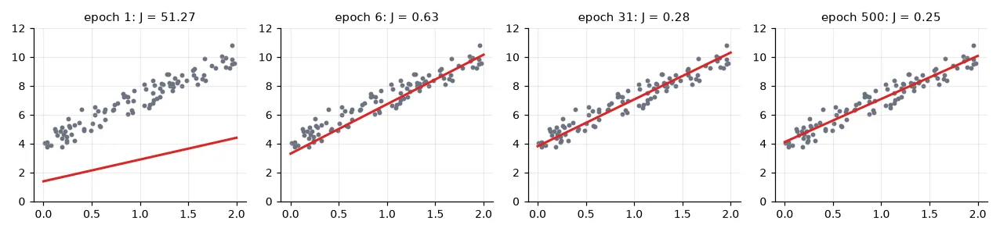
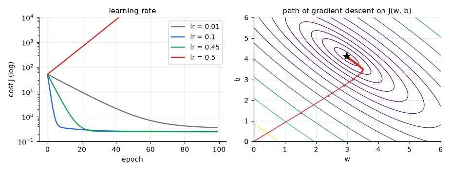
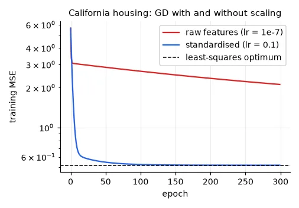
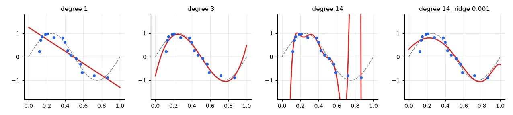

The model#
Linear regression predicts a number as a weighted sum of the inputs:
\(w\) is the slope (weight) and \(b\) the intercept (bias). "Learning" means choosing them so the predictions are close to the targets. Close in what sense? The usual answer is the mean squared error:
Why squares, and not absolute values? If the targets are the true line plus Gaussian noise, \(y_i = w x_i + b + \varepsilon_i\) with \(\varepsilon_i \sim \mathcal{N}(0, \sigma^2)\), then the probability of the data is \(\prod_i \exp\!\big(-(y_i - w x_i - b)^2 / 2\sigma^2\big)\), and maximising it is exactly minimising \(J\). Least squares is the maximum-likelihood estimate under Gaussian noise — and it is also differentiable everywhere, which gradient descent will need.
n = 100
x = 2 * np.random.rand(n) # (100,) inputs in [0, 2]
y = 4 + 3 * x + np.random.normal(0, 0.5, n) # true line w=3, b=4, plus Gaussian noise
Solution 1: the closed form#
\(J\) is a quadratic bowl in \((w, b)\); setting its two partial derivatives to zero gives the textbook formulas — the slope is the covariance of \(x\) and \(y\) over the variance of \(x\):
In matrix form, put the inputs in a design matrix \(A\) with a column of ones for the bias; the solution of \(\min_\theta \|A\theta - \mathbf{y}\|^2\) is \(\theta = (A^\top A)^{-1} A^\top \mathbf{y}\) (the normal equations). Never invert the matrix yourself: np.linalg.lstsq solves it stably with an SVD.
# Simple regression: slope = cov(x, y) / var(x), intercept from the means
w_cf = np.sum((x - x.mean()) * (y - y.mean())) / np.sum((x - x.mean()) ** 2)
b_cf = y.mean() - w_cf * x.mean()
# Same thing in matrix form: add a column of ones and solve the least-squares problem
A = np.c_[x, np.ones(n)] # (100, 2) design matrix
theta, *_ = np.linalg.lstsq(A, y, rcond=None)
print("closed form: w = %.4f, b = %.4f | lstsq: %s" % (w_cf, b_cf, np.round(theta, 4)))
closed form: w = 2.9842, b = 4.1111 | lstsq: [2.9842 4.1111]
Close to the true \(w=3, b=4\); the difference is the noise.
y_hat = w_cf * x + b_cf
rmse = np.sqrt(np.mean((y - y_hat) ** 2))
rmse_wrong = np.sqrt(np.sum(y - y_hat) ** 2 / n) # square of the sum, not sum of the squares
print("RMSE = %.4f, 'RMSE' with the misplaced parenthesis = %.2e" % (rmse, rmse_wrong))
RMSE = 0.4981, 'RMSE' with the misplaced parenthesis = 6.48e-15
One parenthesis, zero error
The class example computed np.sqrt((np.sum(y - y_predict)**2) / n): the square of the sum of the residuals instead of the sum of the squares. For a least-squares fit with an intercept the residuals sum to exactly zero (that is the \(\partial J / \partial b = 0\) condition), so this "error" is always ≈ 0, whatever the data. When a metric looks too good, test it on a case where you know the answer.
Solution 2: gradient descent#
The closed form needs all the data in memory and a matrix factorisation. Neural networks have millions of parameters and no closed form at all; what they use is gradient descent: start somewhere, compute the slope of the cost, take a small step downhill, repeat.
\(\eta\) is the learning rate. For our \(J\) the gradient is
def gradient_descent_regression(x, y, lr, epochs):
"""Fit y = w x + b by minimising the mean squared error with batch gradient descent."""
w, b = 0.0, 0.0
history = [] # (w, b, cost) after each epoch
for _ in range(epochs):
err = (w * x + b) - y # (n,) residuals
cost = np.mean(err ** 2)
grad_w = 2 * np.mean(err * x) # dJ/dw
grad_b = 2 * np.mean(err) # dJ/db
w -= lr * grad_w
b -= lr * grad_b
history.append((w, b, cost))
return w, b, np.array(history)
w, b, hist = gradient_descent_regression(x, y, lr=0.1, epochs=500)
print("gradient descent: w = %.4f, b = %.4f, final cost %.4f" % (w, b, hist[-1, 2]))
gradient descent: w = 2.9842, b = 4.1111, final cost 0.2481
Exactly the closed-form answer.
Implement it, don't import it
The exercise asked for this function. My submission called sklearn.linear_model.SGDRegressor inside it — which works, returns the right line, and teaches nothing about how the parameters move. The eight lines above are the core of every training loop in Part IV; it is worth writing them once by hand.

The learning rate#
H = 2 * A.T @ A / n # Hessian of J(w, b): constant for a quadratic
eig = np.linalg.eigvalsh(H)
print("Hessian eigenvalues %s -> gradient descent diverges for lr > 2/%.2f = %.3f"
% (np.round(eig, 3), eig.max(), 2 / eig.max()))
for lr in (0.01, 0.1, 0.45, 0.5):
_, _, h = gradient_descent_regression(x, y, lr=lr, epochs=100)
print(f"lr = {lr:<4}: cost after 100 epochs = {h[-1, 2]:.4g}")
Hessian eigenvalues [0.322 4.131] -> gradient descent diverges for lr > 2/4.13 = 0.484
lr = 0.01: cost after 100 epochs = 0.3619
lr = 0.1 : cost after 100 epochs = 0.2484
lr = 0.45: cost after 100 epochs = 0.2481
lr = 0.5 : cost after 100 epochs = 1.494e+07
Too small and training crawls; too large and every step overshoots the minimum by more than the previous one — the cost explodes. For a quadratic cost the limit is exact: gradient descent converges if and only if \(\eta < 2/\lambda_{\max}\), where \(\lambda_{\max}\) is the largest eigenvalue of the Hessian (the matrix of second derivatives, here \(\frac{2}{N}A^\top A\)). Neural networks are not quadratic, but the same picture holds locally — which is why a diverging loss is the first sign of a learning rate that is too high.

The right plot shows the other problem: the contours are elongated ellipses. The ratio of the Hessian's eigenvalues (here \(4.13 / 0.32 \approx 13\), the condition number) says how much steeper one direction is than the other. The learning rate is limited by the steepest direction, so progress along the flattest one is slow.
Why scaling makes optimisation fast#
With several features of very different scales, the condition number explodes. California housing (20,640 districts, 8 features, target = median house value) has features with standard deviations from 0.5 to 1,100:
housing = fetch_california_housing(data_home=str(U.CACHE))
Xh, yh = housing.data, housing.target # (20640, 8), median house value in $100k
Xh_tr, Xh_te, yh_tr, yh_te = train_test_split(Xh, yh, test_size=0.25, random_state=0)
def gd_linear(X, y, lr, epochs):
"""Multivariate version: theta = (w_1..w_d, b), gradient in matrix form."""
A = np.c_[X, np.ones(len(X))]
theta = np.zeros(A.shape[1])
costs = []
for _ in range(epochs):
err = A @ theta - y
costs.append(np.mean(err ** 2))
theta -= lr * 2 * A.T @ err / len(y)
return theta, np.array(costs)
ref = LinearRegression().fit(Xh_tr, yh_tr)
ref_mse = np.mean((ref.predict(Xh_tr) - yh_tr) ** 2)
sc = StandardScaler().fit(Xh_tr)
_, cost_raw = gd_linear(Xh_tr, yh_tr, lr=1e-7, epochs=300) # larger lr diverges on raw data
_, cost_std = gd_linear(sc.transform(Xh_tr), yh_tr, lr=0.1, epochs=300)
print("optimal training MSE %.4f | GD raw features: %.4f | GD standardised: %.4f"
% (ref_mse, cost_raw[-1], cost_std[-1]))
print("feature std range: %.2g .. %.2g" % (Xh_tr.std(0).min(), Xh_tr.std(0).max()))
optimal training MSE 0.5192 | GD raw features: 2.1176 | GD standardised: 0.5193
feature std range: 0.49 .. 1.1e+03

Same model, same data, same algorithm — standardising the inputs turns the long thin valley into a round bowl. In lesson 01 scaling changed the answer of k-NN; here it changes only the speed of finding the answer, but by orders of magnitude. Neural networks are trained by gradient descent, so they inherit this: normalise your inputs (lesson 12 forgets to, on purpose).
Overfitting, again: polynomial regression#
A linear model is linear in its parameters, not necessarily in \(x\): with features \((1, x, x^2, \dots, x^p)\) it fits a polynomial, still by least squares. Fit 15 noisy samples of a sine wave with growing degree:
xs = np.sort(np.random.rand(15)) # only 15 training points
f = lambda t: np.sin(2 * np.pi * t)
ys = f(xs) + np.random.normal(0, 0.2, 15)
xv = np.random.rand(200)
yv = f(xv) + np.random.normal(0, 0.2, 200)
def fit_poly(deg, alpha=0.0):
model = Ridge(alpha=alpha) if alpha else LinearRegression()
feats = PolynomialFeatures(deg)
model.fit(feats.fit_transform(xs[:, None]), ys)
return lambda t: model.predict(feats.transform(np.asarray(t)[:, None]))
for deg, alpha in [(1, 0), (3, 0), (14, 0), (14, 1e-3)]:
p = fit_poly(deg, alpha)
print(f"degree {deg:2d}, ridge alpha {alpha:g}: train MSE {np.mean((p(xs) - ys) ** 2):.4f}, "
f"validation MSE {np.mean((p(xv) - yv) ** 2):.4f}")
degree 1, ridge alpha 0: train MSE 0.0930, validation MSE 0.3091
degree 3, ridge alpha 0: train MSE 0.0203, validation MSE 0.0755
degree 14, ridge alpha 0: train MSE 0.0022, validation MSE 263534.3869
degree 14, ridge alpha 0.001: train MSE 0.0338, validation MSE 0.0590

The degree-14 polynomial has 15 coefficients for 15 points: it interpolates the noise. Ridge regression adds a penalty \(\alpha\|\mathbf{w}\|^2\) to the cost, which forbids huge coefficients; the model keeps its flexibility but has to pay for using it. This trade-off — capacity versus data — is the same as \(k\) in k-NN, and it will reappear as \(C\) in SVMs, depth in trees and weight decay in neural networks.
Exercises#
- Implement stochastic gradient descent: at each step use one random sample (or a mini-batch of 10) instead of the whole set. Plot the cost: why is it noisy, and why does it still converge?
- Make the animation the exercise asked for: save one PNG per epoch of the first figure and assemble them into a GIF with
imageio. - On California housing, fit ridge regression with polynomial features of degree 2 and choose \(\alpha\) on a validation set. How much does the test MSE improve over the plain linear model?